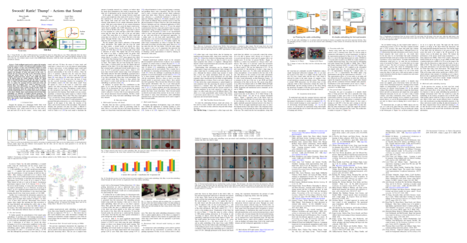

Swoosh! Rattle! Thump! - Actions that Sound
Truly intelligent agents need to capture the interplay of all their senses to build a rich physical understanding of their world. In robotics, we have seen tremendous progress in using visual and tactile perception; however, we have often ignored a key sense: sound. This is primarily due to the lack of data that captures the interplay of action and sound. In this work, we perform the first large-scale study of the interactions between sound and robotic action. To do this, we create the largest available sound-action-vision dataset with 15,000 interactions on 60 objects using our robotic platform Tilt-Bot. By tilting objects and allowing them to crash into the walls of a robotic tray, we collect rich four-channel audio information. Using this data, we explore the synergies between sound and action and present three key insights. First, sound is indicative of fine- grained object class information, e.g., sound can differentiate a metal screwdriver from a metal wrench. Second, sound also contains information about the causal effects of an action, i.e. given the sound produced, we can predict what action was applied to the object. Finally, object representations derived from audio embeddings are indicative of implicit physical properties. We demonstrate that on previously unseen objects, audio embeddings generated through interactions can predict forward models 24% better than passive visual embeddings.
Collected Dataset
Datset Collected using the Tolt-Bot. For more details, refer to the paper.
Dataset and Source Code
We have released the Dataset and Source code on the github page.
Paper and Bibtex
|

[Paper]
[ArXiv]
|
|
Citation
Dhiraj Gandhi, Abhinav Gupta, Lerrel Pinto. Swoosh! Rattle! Thump! - Actions that Sound
In RSS 2020.
[Bibtex]
|
|
|
|
@misc{g2020swoosh,
title={Swoosh! Rattle! Thump! -- Actions that Sound},
author={Dhiraj Gandhi and Abhinav Gupta and Lerrel Pinto},
year={2020},
eprint={2007.01851},
archivePrefix={arXiv},
primaryClass={cs.RO}
}
|
Acknowledgements
We would like to thank Xiaolong Wang and Olivia Watkins for insightful comments and discussions.
|